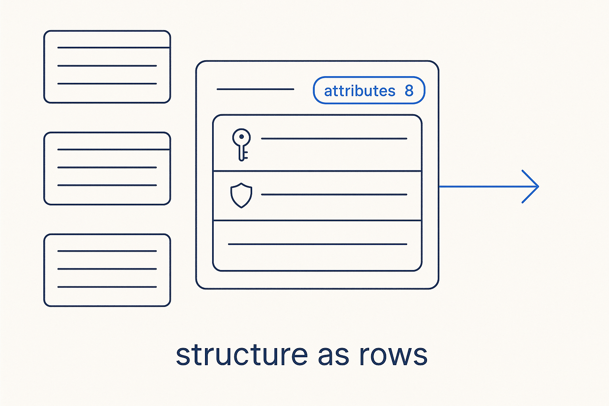

The shape of the platform as data — models, entities, attributes, identifiers and relationships are rows you can count, join and query, with governance living right on the attribute.

> The shape of the platform as data — models, entities, attributes, identifiers and relationships are rows you can count, join and query, with governance living right on the attribute.
Structure metadata is the part everyone recognizes as “the data model” — but here it isn’t a diagram, it’s data. Models, entities and attributes are rows. Identifiers are first-class objects (an identifier has member columns, in order, with its constraint and index metadata), not flags squeezed onto the entity. Relationships carry cardinality and roles. The kernel is small and deliberate: model → layer → entity → attribute, with keys, inheritance and domains as first-class citizens rather than afterthoughts.
Because the structure is data, questions about it are queries. “How many attributes does this entity have?” is a join. “Which attributes are PII, and on which entities?” is a filter — and the answer is trustworthy because governance lives *on* the attribute, not in a separate spreadsheet that drifts. The same is true for classification, profiling and the physical options: they hang off the structural hubs as satellites, so the hubs stay lean while the model stays complete.
This is the foundation everything else builds on. Transformation, temporality, quality and lineage all reference the structural hubs. Get the structure right — explicit, queryable, governed on the attribute — and the rest of the platform has something solid to stand on.
Structure as rows: How many attributes does each entity have? That's a join, not a diagram — because the structure itself is data.
SELECT e.model_id, e.entity_name,
count(a.attribute_id) AS attributes
FROM metadata.entity e
LEFT JOIN metadata.attribute a ON a.entity_id = e.entity_id
GROUP BY 1, 2
ORDER BY 1, 3 DESC;